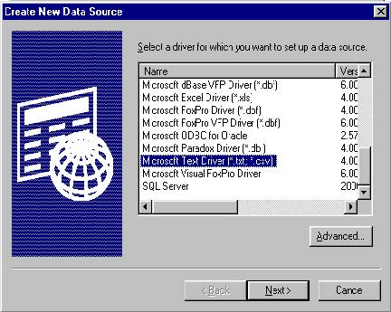
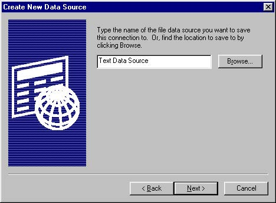
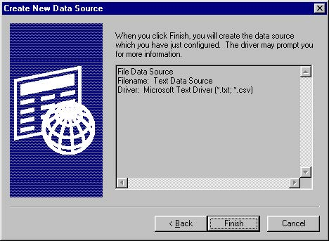
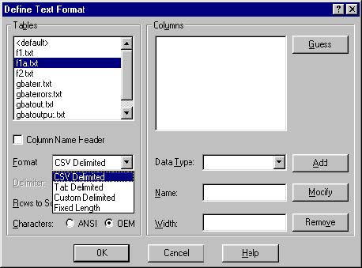
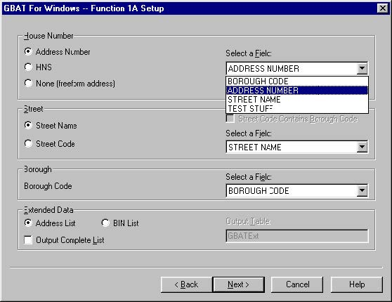
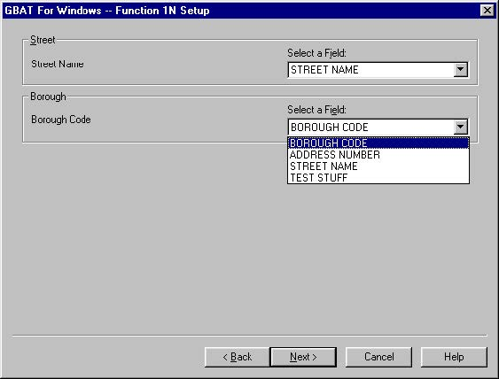
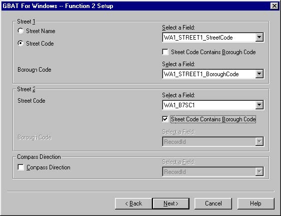
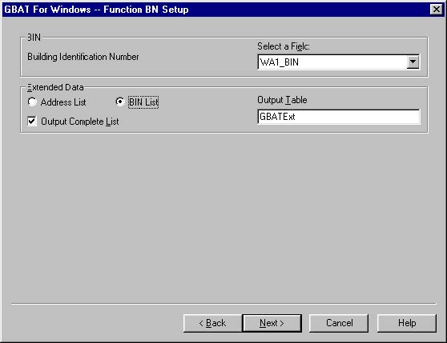
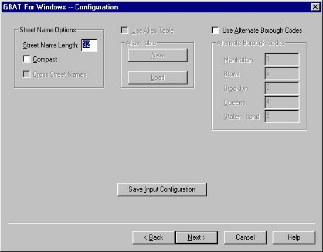
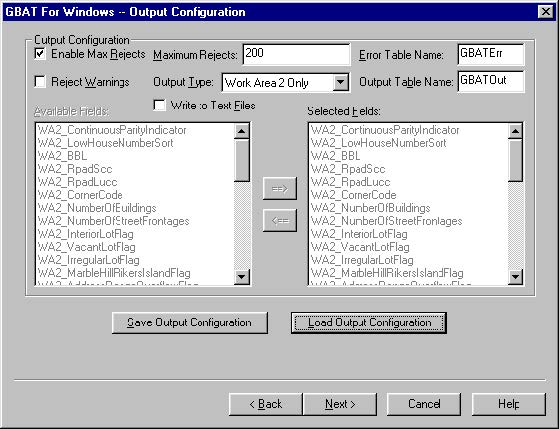

X.2 Using GBAT
X.2.1 Before You Begin
Use the Geosupport Desktop Edition Installation CD to install the Geosupport Desktop Edition package.
It is recommended that you use GBAT on machines with the latest versions of the “Microsoft Data Access Components” and “Microsoft Jet”. If you want to make certain that you are up to date, download and install the following files from Microsoft’s web site: Mdac_typ.exe,Jet40Sp3_Comp.exe, and Jet40SP6_9xNT.exe.
X.2.2 Starting the Application
To start the application, find and double-click the NYCgbat.exe program icon which appears as shown on the right side,  in My Computer or Windows Explorer.
in My Computer or Windows Explorer.
X.2.3 Selecting an ODBC Data Source
Upon starting the application, you will be presented with the following ODBC data source selection screen.

An ODBC Data Source file is a configuration file that contains information about a database that can be accessed through ODBC. If you have previously configured the data source, it will be listed in the list displayed in the “Select Data Source” window, an example of which is shown above. In that situation, select that Data Source and click on the OK button. Then proceed to Chapter X.2.5 labeled “Function Selection” in this document. If you have not previously configured your data source, you need to create a new data source. This is done by clicking on the New button.
Creating a data source using a database that you are familiar with should be a fairly straightforward process; refer to the documentation or online help of your ODBC driver’s data source configuration for further information. See Note For Database Users on previous page.
Creating a data source for text files is more complicated. Follow the steps indicated in Chapter X.2.4 to create a data source for the text files.
X.2.4 Configuring a New Text Data Source
First, click on the New button in the Select Data Source Window, which is illustrated above. You will be presented with a list of drivers for which a data source can be set up as illustrated below on the “Create New Data Source” window. Select the Microsoft Text Driver and click on the Next button.

In the ”Create New Data Source” window illustrated below, choose a name for your data source and click on the Next button.

Click on the finish button in the window shown next, and you will be taken to the ODBC text driver’s configuration screen.

The next window illustrates the “ODBC Text Setup” screen as it initially appears.

In the above window, first deselect the “Use Current Directory” checkbox.
Next Using the “Select Directory” button, choose the directory in which your text files are located.
Then click on the Options button to expand the window.

If the extension of the filenames in which your data is stored does not appear on the Extensions List of the above window, type it in the Extension box and click on the Add button. Then, select that extension on the list and click on the “Define Format” button.

You can use the above window labeled “Define Text Format” to specify the schema of the data in each of your text files. This is important because GBAT operates on a database paradigm rather than a flat-file paradigm. It needs to be given data in the form of Tables and Columns (also know as “fields”), rather than files and character positions, in order to make sense out of them.
First from the “Tables” menu select the name of the file whose schema you wish to define.
Check the “Column Name Header” checkbox if the first line of the text file that you are configuring contains field names rather than field data. (If the data file does not contain field names, you will have to specify field names later on.)
Now, select the format in which your data is stored.
-
Choose “CSV Delimited” if your data items are surrounded by quotation marks and separated by commas
-
Choose “Tab Delimited” if your data items are separated by tab characters
-
Choose “Custom Delimited” if your data items are separated by some other character. You will have to specify that character in the “Delimiter” field.
-
Choose “Fixed Length” if the data items in your text file are a fixed number of characters, consistent on each line, without any sort of delimitation.
If your text file uses the Fixed Length format, and/or you have not selected the “Column Name Header” checkbox, you will now have to specify information about the fields that it contains. (In all other circumstances, the Driver should be able to determine this information automatically. You can click the “Guess” button if you want to make sure.) For each field in your text file:
-
Choose the field’s Data Type from the “Data Type” drop-down menu. This will usually be “char” for fields in text files.
-
Enter a Name by which the field will be identified.
-
If you are using a Fixed Length format file, and/or you have chosen “char” for the data type, specify the Width of the field in characters. This is important for any file format, because if you specify a width that is too short, the data that GBAT sees will be truncated. However, it is especially important for Fixed Length format files that the field width be accurate, because the width value is also used to determine the starting position of the following field.
-
Click on the Add button to add the field specification to the Columns list.
If, for example, you have a Fixed Length format text file, where two lines appear as:
22 Reade St. 1
1541 E28 St. 3
This file contains an Address Number field beginning at position one that is five characters long, followed by a street name field beginning at position six that is twelve characters long, followed by a borough code field beginning at position eighteen that is a single character long. To configure the columns for this table, select Char from the data type list, type “ADDRESS NUMBER” for the name, and “5” for the width; then click on the Add button. Then select Char, enter “Street Name”, and “12”, and click on Add. Finally, select char once again, enter “Borough Code”, “1”, and click on Add.
When you’ve finished setting up your table, you can select another text file to configure from the Tables list box. After you have configured all of your tables, click on the OK button to return to the “ODBC Text Setup” window. Click on the OK button in this window. You have now finished setting up your Text ODBC Data Source. Select your newly created data source in the window labeled “Select Data Source”, which should be displayed now. Click on the OK button to continue to the next step.
X.2.5 Function Selection

This is the point at which the configuration of your GBAT session proper begins. First, you will be defining the input information to be used by GBAT; that is, where the data is coming from, and what sort of processing should be carried out on it.
If you have already configured the input settings and saved them to a file, you can retrieve those settings here. Select the “Load Configuration” checkbox and find the saved configuration file using the Browse button. You may then proceed to Chapter X.2.7 labeled “General Input Configuration” by clicking on the Next button.
You must choose a table to be the source of your input data. To do this, select a table from the “Select a Table” drop-down list. This will be a data source that you previously configured as described in Chapter X.2.3 of this document.
You must also choose the Geosupport function that will be used to process your data. To do this, select the radio button for the appropriate function. For more information on the capabilities of each of the Geosupport functions, please see Appendix 1.
Click on the Next button to continue on to the next screen.
X.2.6 Function-Specific Configuration
X.2.6.1 Function 1 and Function 1E
If you chose Function 1 on the Function Selection window, the following window will be displayed.

Please note that the window for Function 1E differs from the window for Function 1 only in the label at the top of the window.
The input information required to execute Function 1 or 1E includes an address number, street name or street code, and borough.
Your text file or database may contain the house number in one of three different forms. The most common form is the manner in which you would normally write the house number; e.g. 22, 61-15, 27A, etc. If your data is in this form, select the first button under House Number which is labeled “Address Number”. If your file has been processed by the Geosupport system you may have saved the form of the house number used internally in Geosupport referred to as HNS, which stands for House Number in Sort format. If your data is in this format, select the second button under House Number, which is labeled HNS. The third possibility is that the address number is combined with the street name and, consequently, there will be no separate field for the address number. In this case, select the third button under House Number which is labeled None (Freeform address). If either “Address Number” or “HNS” is selected, then select the field in your file which contains the Address Number or HNS. If you have selected “HNS”, the field must be eleven characters wide. If you have selected “Address Number”, then the field may be any size up to sixteen characters wide. If you have selected “None”, then no field is selected.
Next specify the format of your street data, which will be street name or street code. If you have selected the street code option and the street code field in your database contains a borough code as its first digit, select the “Street Code Contains Borough Code”button. From the drop-down list, select the field in the table that contains the street data.
Now specify the field in your table that contains the borough code. If the borough code in your table is contained within the street code field, this step will not be necessary.
Once you have finished configuring these options, click on the Next button to move on to the next screen, which is described in Chapter X.2.7 labeled “General Input Configuration”.
X.2.6.2 Function 1A
If you chose Function 1A on the Function Selection screen, the following window will now be displayed:

The input information required to execute Function 1A includes an address number, street name or street code, and borough as well as information defined as “Extended Data”. For information on defining the address number, street information and borough refer to the previous section which describes the input information required to execute Function 1 and 1E since this information is the same.
For Function 1A, you have the option of having Geosupport return a list of addresses or a list of Building Identification Numbers commonly referred to as BINs. If you want the list of addresses, select the button labeled “Address List”. If you want the list of BINs, select the button labeled “BIN List”. Since the number of addresses in the address list can vary from one to twenty one and the number of BINs in the BIN list can vary from one to two thousand five hundred, only the first item in the list will be returned as an optional field for your output table. However, if you would like the full list of addresses or BINs, select the “Output Complete List” checkbox and enter the name of the database table to which you would like the list to be output. If you later chose to output the results of the data processing as text files rather than database tables, the name that you specify here will be ignored. If the database table does not exist, it will be created during execution of GBAT.
Once you have finished configuring these options, click on the Next button to move on to the next screen, which is described in Chapter X.2.7 labeled “General Input Configuration”.
X.2.6.3 Function 1N
If you chose Function 1N on the Function Selection screen, the following window will be displayed:

The input information required to execute Function 1N includes a street name and borough.
First select from the drop-down list the field in the table that contains the street name.
Next specify the field in your table that contains the borough code.
Once you have finished configuring these options, click on the Next button to move on to the next screen, which is described in Chapter X.2.7 labeled “General Input Configuration”.
X.2.6.4 Function 2
If you chose Function 2 on the Function Selection screen, the following window will now be visible:

The input information required to execute Function 2 includes two streets and the borough associated with each street. If the streets intersect exactly twice, a compass direction is required as well. If the streets intersect more than twice, then the intersection cannot be processed by Geosupport.
First, it is necessary to specify the format of your street data, which will be in the form of either street name or street code. The street code may be either the five-digits, seven digits or ten-digits. If the street code field has been selected and it includes the borough code, then select the boxes labeled “Street Code Contains Borough Code”. From the drop- down lists, select for each street the field in the table that contain the street data to be used. Do the same for the borough codes, if they are not contained within the street codes.
If you are using street codes, please ensure that all of the street codes you provide for each street are of the same length; that is, all street codes must be either 5 digit, 7 digit or 10 digit and all must either include or exclude the borough code.
If you would like to specify a field for compass directions, ensure that the “Compass Direction” checkbox is checked and select the appropriate field from the drop-down list. If you do not wish to provide this optional field, ensure that the “Compass Direction” checkbox is not checked.
Once you have finished configuring these options, click on the Next button to move on to the next screen, which is described in Chapter X.2.7 labeled “General Input Configuration”.
X.2.6.5 Function 3
If you chose Function 3 on the Function Selection screen, the following window will be displayed:

The input information required to execute Function 3 includes the on-street, two cross streets and the boroughs of each street.
First, using the radio buttons, specify the format of your street data, which will be street name or street code. For each street for which you have selected the street code option and for your data the borough code is not contained within the street code, check the “External Borough Code” checkbox. From the drop-down lists, for each street select the field in the table that contains the street data. Do the same for the borough codes, if they are not included with the street codes.
If you are using street codes, please ensure that all of the street codes you provide for each street are of the same length; that is, all street codes must be either 5 digit, 7 digit or 10 digit and all must either include or exclude the borough code.
Once you have finished configuring these options, click on the Next button to move on to the next screen, which is described in Chapter X.2.7 labeled “General Input Configuration”.
X.2.6.6 Function 3C
If you chose Function 3C on the Function Selection screen, the following window will now be displayed:

The input information required to execute Function 3C includes a compass direction, an on-street name, two cross streets, and the boroughs for each of the streets.
First, using the radio buttons, specify the format of your street data, which will be street name or street code.
Next select the field containing the compass direction from the “Select a Field for Compass Direction” drop-down.
Refer to Chapter X.2.6.5, which describes the input for Function 3, for information on supplying the rest of the data for Function 3C.
Once you have finished configuring these options, click on the Next button to move on to the next screen, which is described in Chapter X.2.7 labeled “General Input Configuration”.
X.2.6.7 Function BL
If you chose Function BL on the Function Selection screen, the following window will now be displayed:

The input information required to execute Function BL includes a borough, tax block and tax lot. Each of these items may be provided in separate fields or as a single ten-character string in one field.
If you would like to provide the entire BBL in a single field, select the “Full BBL” radio button in the Borough area of the window and then choose the appropriate source field from the drop-down menu.
If, on the other hand, you would prefer to provide each element of the BBL individually, select the “Borough Code” radio button in the Borough area of the window and then choose the appropriate source field for the borough code from the adjacent drop-down. Do the same thing for the tax block and the tax lot in the subsequent areas of the window.
For Function BL as for Function 1A, you have the option of having Geosupport return a list of addresses or a list of Building Identification Numbers commonly referred to as BINs. If you want the list of addresses, select the button labeled “Address List”. If you want the list of BINs, select the button labeled “BIN List”. Since the number of addresses in the address list can vary from one to twenty one and the number of BINs in the BIN list can vary from one to two thousand five hundred, only the first item in the list will be returned as an optional field for your output table. However, if you would like the full list of addresses or BINs, select the “Output Complete List” checkbox and enter the name of the database table to which you would like the list to be output. If you later chose to output the results of the data processing as text files rather than database tables, the name that you specify here will be ignored. If the database table does not currently exist, it will be created during the GBAT execution.
Once you have finished configuring these options, click on the Next button to move on to the next screen, which is described in Chapter X.2.7 labeled “General Input Configuration”.
X.2.6.8 Function BN
If you chose Function BN on the Function Selection screen, the following window will now be displayed:

The input information required to execute Function BN includes only the Building Identification Number (BIN). Select the field containing the list of input BINs using the drop-down menu.
Unlike Functions 1A and BL, only the Address List may be returned with Function BN. The first item on this list will be available as an optional field for your output table. However, if you would like the full list of address ranges, select the “Output Complete List” checkbox and enter the name of the database table to which you would like the list to be output. If you later chose to output the results of the data processing as text files rather than database tables, the name that you specify here will be ignored.
Once you have finished configuring these options, click on the Next button to move on to the next screen, which is described in Chapter X.2.7 labeled “General Input Configuration”.
X.2.6.9 Function D, DG, DN
If you chose a D Function on the Function Selection screen, a variation on the following window will now be displayed:

The input information required to execute Function D, DG or DN includes one to three street codes and their associated borough. Five digit street codes are supplied for Function D, seven digit street codes are supplied for Function DG and ten digit street codes are supplied for Function DN.
Chose the input field that will be used as the source for the first street code from the drop-down list. If the borough code is not also contained within this field, check the “External Borough Code” checkbox, and choose the source field for the borough code from the adjacent drop-list.
If you have additional input fields for street codes, you may specify them in a similar fashion, after first checking the “Second Street Code” and “Third Street Code” check boxes.
Please ensure that all of the street codes you provide are of the same length; that is, all street codes must be either 5 digit for Function D, 7 digit for Function DG or 10 digit for Function DN and all must either include or exclude the borough code. Please note that if the borough code is included with the street code, then the field width for Function D is six, for Function DG, eight and for Function DN, eleven.
Once you have finished configuring these options, click on the Next button to move on to the next screen, which is described in Chapter X.2.7 labeled “General Input Configuration”.
X.2.7 General Input Configuration
The General Input Configuration Window should now be displayed:

This window is used to configure various options that influence how the data is processed, but are not specific to a particular function.
You can specify the maximum length of street names that Geosupport will process and return by using the “Street Name Length” field. The value that you enter should be between four and thirty-two, inclusive. The default value is thirty-two.
The default format for street names is the Sort Order format. The Sort Order converts all numbers in street names to a four character field; for example the “1" in “1 Avenue” is preceded by three blanks and the “10" in “10 Avenue” is preceded by two blanks. The purpose of the leading blanks is to force “1 Avenue” to precede “10 Avenue” when the street names are sorted. The Compact format eliminates the leading blanks. If you would like street names to be returned in Compact format, check the Compact checkbox; otherwise street names will be returned in Sort Order format.
Certain functions are able to return lists of cross streets in Work Area 1. If you would like the names of the cross streets to be returned as well as their street codes, check the “Cross Street Names” checkbox. This checkbox will be enabled only when you are using a function that can return the cross street list.
Alias Table functionality has not yet been implemented in GBAT Desktop Edition; please ignore the associated controls in this window at this time.
If your data uses some values for borough codes other than the Geosupport standard3, check the “Use Alternate Borough Codes” checkbox and enter them here. When encountering these non-standard borough codes, GBAT will translate them into the appropriate Geosupport equivalents, allowing successful processing to occur. This option is available only for those functions which accept borough codes for input.
If you would like to save your input configuration settings for later re-use, click on the Save Input Configuration button. You will be presented with a window which enables you to supply the name you wish to use for this file.
Once you have finished configuring the options in this window, click on the “Next” button to continue on to the next screen, which is described in Chapter X.2.8 which is labeled Output Configuration.
3The standard borough codes are 1=Manhattan, 2= Bronx, 3=Brooklyn, 4=Queens and 5=Staten Island.
X.2.8 Output Configuration
You should now see the following Output Configuration window:

This screen is used to configure various aspects of the behavior of GBAT during the function processing as well as describing the desired output. If you have previously configured these settings and saved them to a file, you can click on the “Load Output Configuration” button to retrieve the file. You will be presented with a window that lists the various output configuration files that are stored in your system.
If you would like GBAT to stop processing after a certain number of input records have been rejected by Geosupport (i.e., caused Geosupport to return an error), check the “Enable Max Rejects” checkbox. The default value is 200 and appears in the box labeled “Maximum Rejects”. If this number is not suitable for your situation, you may specify another value. If you would like records that generate Geosupport warnings as well as errors to be treated as rejects, check the “Reject Warnings” checkbox.
If you would like output to be written to text files rather than to tables in your database, check the “Write to Text Files” checkbox. Buttons labeled “Error File Browse” and “Output File Browse” will appear; these can be used to select the names of the text files in which output will be placed. For Functions 1A, BL and BN where you have selected the check box labeled “Output Complete List” after you have clicked on the “Start” button on the Function Processing window, you will receive a request for the name of the file in which the address list or the BIN list output is to be stored.
If you would like your output written to database tables, make sure that the “Write to Text Files” checkbox is not checked. You must specify a name for the error table in the “Error Table Name” text box, and a name for the output table in the “Output Table Name” text box. If you chose names belonging to tables that already exist, those existing tables will be deleted and replaced with the new tables.
Use the “Output Type” drop down list to select the type of output that you would like GBAT create. “Work Area 1” will place all of the data returned by Work Area 1 into your output table. “Work Area 2” will do the same with all the Work Area 2 fields. “WA1 and WA2” will return all the fields from both work areas into your table. If you select the “Errors Only” section, no output table will be generated at all and only errors will be returned. This is a simple way to validate the data that you have in your database or text file.
Selecting the “Custom” option from the “Output Type” drop down allows you to include whatever fields you want in the output table, in whatever order you want. Chose fields from the “Available Fields” list by selecting them with the left mouse button. Multiple fields can be selected by holding down the Ctrl key and clicking on each. To select a range of fields, hold down the shift key, click on the first fields in the range, and then on the last. To add fields to the “Selected Fields” list, click on the º button. To remove fields from the “Selected Fields” list, select them as you would those in the “Available Fields” list and click on the » button.
When you are finished setting up these configuration options, you can save them to disk for later re-use. To do so, click on the “Save Output Configuration” button.
Click on the Next button to move to the next screen, which is described in Chapter X.2.9, which is labeled Function Processing.
X.2.9 Function Processing
At this point everything is prepared for the actual GBAT execution. The Function Processing window should now appear on your display unit:

Click on the Start button to begin execution. Output messages will periodically be displayed in the window, indicating the process’s status, as well as a blue progress bar which will indicate the percentage of the job that has been completed. If at any time you would like to halt the processing, simply click on the upper Cancel button.
When processing has completed, the window will look something like the following window.

If you would like to run the process again, click on the Start button. If you would like to make changes to the configuration before executing GBAT again, click on the Back button until you reach the screen that contains what you want changed.
To exit the application, click on the Finish button.